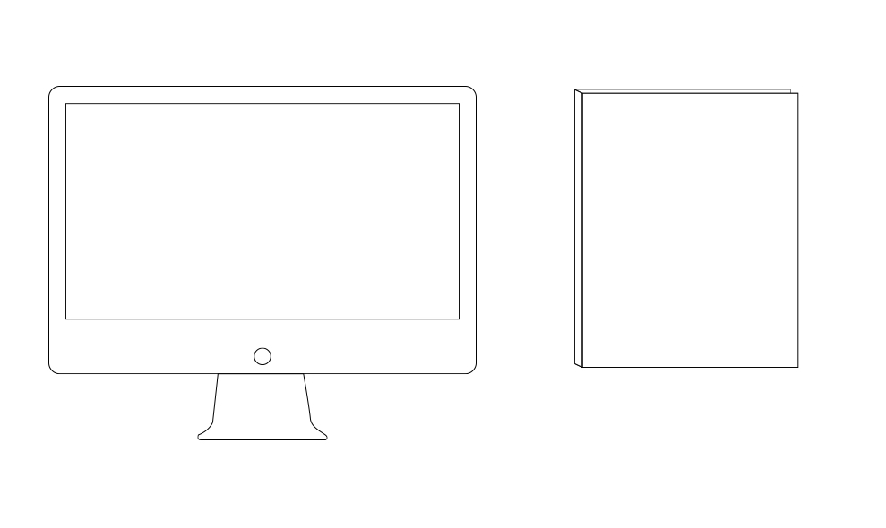
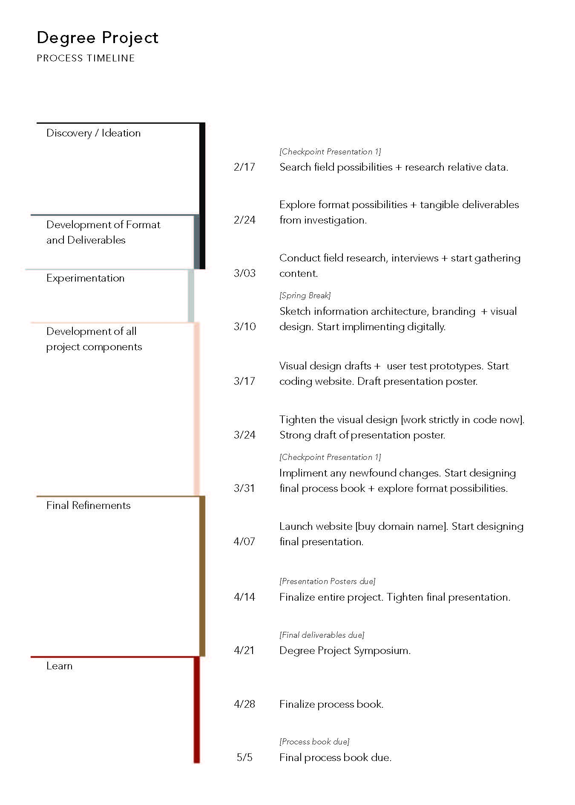

Direction
PERSONAL LOG
February 25th, 2015
Decision Made.
After our meeting yesterday, I had to consider the primary form of my project. The idea that I initially ran with was to have a print-based publication with an associated virtual toolkit. But Brian brought up a considerable point yesterday, that I might be biting off more than I can chew by have the weight of the project be equally dispersed between print and digital. The feedback I recieved was to curate a content map, and let that determine the primary form. Then, maybe, I can design a hybrid between the two: A print magazine that includes a take away tool kit, or a virtual publication that has more features than interviews and articles.
A goal that I’ve resolved on for this project is to curate most of my content based on submissions + interviews that are written exclusively for the issue (or theme?) , with maybe only 15-20% being repurposed stories.
I took today to research digital magazine websites, whether they be strictly web-based [ex: Brevity magazine], web-based with associated print artifacts [ex: The Great Discontent], or print with an associated web presence [ex. Time magazine]. Of course, we’re all aware of the ongoing debate between print vs. digital. Me, personally, I’m an advocate for the luxury of a beautifully printed magazine, but at the same time I have a number on online blogs and publications that I follow practically every time they update their site.
When it comes to design, I know that I am not looking to go into the field of print publication. While I’ll always have a love for it, I don’t see myself getting as excited about it as I do with multidisciplinary fields. I can’t see my curiosity for web and dynamic media come to rest [making no comments on publication not including this]. Yet, before I sell myself to follow one career path over another, I’m viewing this project as an exclusive experiment to contradict myself.
With that, is my decision: To not define this publication by the platform in which it’s published, rather, to keep the focus in terms of the audience [you, as creators], the content, and the mission. YET (here I go with contradicting myself again], because I am eager to build out a fully flushed out website, [as well as not signing myself up to spend hundreds of dollars on another project this year], I’m going to start with an online publication. Once I’ve starting building a content base to go off of, I’ll consider adding a print artifact as a premium feature.
I think the struggle, with self driven projects is... The idea that I initially ran with was to have a print-based publication with an associated virtual toolkit. But Brian brought up a considerable point yesterday, that I might be biting off more than I can chew by have the weight of the project be equally dispersed between print and digital. The feedback I recieved was to curate a content map, and let that determine the primary form. Then, maybe, I can design a hybrid between the two: A print magazine that includes a take away tool kit, or a virtual publication that has more features than interviews and articles.
I'm a list writer. (Explain project timeline here...) With that, is my decision: To not define this publication by the platform in which it’s published, rather, to keep the focus in terms of the audience [you, as creators], the content, and the mission. YET (here I go with contradicting myself again], because I am eager to build out a fully flushed out website, [as well as not signing myself up to spend hundreds of dollars on another project this year], I’m going to start with an online publication. Once I’ve starting building a content base to go off of, I’ll consider adding a print artifact as a premium feature.
Some notes compiled from trying to create a name for this publication. It turned out to be more challenging than I imagined, because in order to come up with a name that identifies the intent of the site, I needed to ensure that I actually understood what that intent is. I went back to the first degree proposal I wrote in December, where all of my efforts started with exploiting our fear of failure. I think I got sidetracked significantly from my original purpose, and I had to ask myself: Am I exploring fear? Risk? Confidence?
As I was mind mapping, I came across one word that I latched onto: wayward. It’s defined as being “difficult to control or predict because of unusual or perverse behavior.” Alone it can be taken negatively, so I sought out a companion word to alleviate the negative connotation.
I’m moving forward with the name Wayward Bound. It’s almost an oxymoron, if taken in the context of being bound. But thinking in terms of a bound as a synonym for a leap, it makes the prospect of ‘wayward’ seem like an aspiration. Which aligns with the means of being ‘creative.’ Creativity is defined as “the uniqueness that you bring to any activity that you are doing.” The uniqueness that we seek as creatives stems from being bold in our making.
My ambition for this project is to explore our creative potential through the confidence to take risks. And that’s just it: to form an alignment with my original research of failure, but embracing my most recent curiosities with risk and confidence.
FINAL PROJECT STATEMENT
As of April 5th, 2015
“If at first you don’t succeed—try again.” We’ve all grown up hearing this statement, as a way to regain optimism after not meeting our set expectations and feeling like we’ve failed at what we worked for. But like many things, this is easier said than done. While this primitive idea seems like common sense, sometimes it’s incredibly hard for us to accept when we’ve spent countless efforts on one thing to have it go no where. So this calls into question: when did we start using failure as a stopping point, particularly in our creative process? Wayward Bound is a web-hosted publication, focused on showcasing creative persistence from all angles.
Our target audience are those who share a common attribute: an attitude to evolve. At its foundation is the belief that we are all creative; while the processes of our trades may differ, we have so much to learn from each other. This is a call to those who possess an unsatisfied curiosity, one that’s not limited to exploiting the potential of today’s possibilities—but are somehow attempting to add to this prospect. Through case studies, interviews, shared stories and documentaries, Wayward Bound aims to alleviate the fear of failure and unlock the potential of the individual creative who aims to surpass their mental barriers.


© 2015 Beth Chappell
- Terms and Conditions
- Privacy Policy